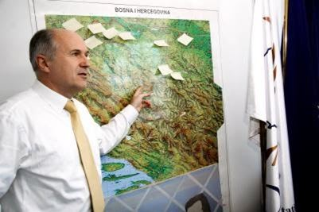

Petar KočićDans le frimas de cette matinée de décembre flottent sur Banja Luka des mots lourds d'une âpre réalité :
« Ко искрено и страсно љуби Истину, Слободу и Отаџбину, слободан је и неустрашив као Бог, а презрен и гладан као пас. »
Risquons-nous à une traduction dans la langue de Nerval: « Celui qui révère sincèrement et passionnément la Vérité, la Liberté et la Patrie est libre et intrépide comme Dieu, mais méprisé et affamé comme un chien. »
Donetsk, Alep, Sana'a et consorts ne pourront qu'approuver cette sentence de Petar Kočić, poète serbe de Bosnie, dont la statue gravée de ces mots se dresse au centre de Banja Luka, capitale de Republika Srpska (nom officiel de la République serbe de Bosnie qui compose, avec la « Fédération croato-musulmane », la Bosnie-Herzégovine).
Je me retrouvai en Republika Srpska après un contrôle musclé de la Police aux frontières croate, qui ne semble pas encore rompue au Vivre-Ensemble et aux passeports français tamponnés de visas pakistanais et afghans.
Des maisonnettes partiellement détruites parsèment les premiers kilomètres d'un paysage monochrome, figé dans le deuil depuis deux décennies. La vérité de la guerre se raconte ici dans une langue silencieuse, faite d'amas de briques, de toits effondrés et ponctuée d'impacts de projectiles de tous calibres.
Leur vérité collective, les citoyens de Republika Srpska l'ont brandie haut et fort le 9 janvier 2017, à l'occasion de l'anniversaire des 25 ans de la République, fondée trois mois avant la guerre de Bosnie; la vérité d'une Nation fière, consciente d'elle-même, alertée des dangers du mondialisme et de son uniformisation tous azimuts. Qualifiée d' « entité » par ceux-là même qui ont reconnu l'indépendance du Kosovo, la Republika Srpska n'en a pas moins un drapeau, un hymne, un gouvernement et une politique étrangère indépendante de Sarajevo. Et plus encore : elle repose sur un Peuple.
La Vérité selon le poète Kočić vient percuter les « vérités » multiples et ambivalentes forgées par les montages orwelliens de la « comm' » roublarde, qui a montré l'étendue de ses capacités de nuisance en Republika Srpska:
- La funeste réalité occultée des douze nourrissons de Banja Luka, décédés par manque d'oxygène lors du blocus de la ville au printemps 1992 (les « organisations internationales » avaient toutes été informées de l'urgence de la situation mais n'ont rien fait), contre les vrais-faux prématurés koweïtiens, « massacrés » par les diaboliques troupes de Saddam, deux ans avant la tragédie de Banja Luka. Cette histoire fut en fait montée de toutes pièces par l'imagination dégoulinante de l'officine de propagande Rendon Group, sous-traitant de la CIA (cf. «affaire des couveuses du Koweït»).
La sculpture érigée en hommage aux 12 nourrissons de Banja Luka, morts par manque d'oxygène en 1992, pendant le blocus- Les atroces volontaires serbes de Bosnie, opposés aux preux djihadistes étrangers du bataillon El-Moudjahid, dont certains reviendront commettre de sanglants braquages en France, pour financer leur cause, avant d'achever leur fulgurante carrière de Combattants de la Liberté carbonisés dans une maison ouvrière de Roubaix (cf. « Gang de Roubaix »). Notons que pendant la guerre de Bosnie, ces valeureux guerriers reçurent les louanges du philosophe chasseur de « salauds », cinéaste incompris et collectionneur compulsif de cartes de visite, Bernard-Henry Lévy, toujours plus réseauteur que raisonneur.
Fi ! Ne nous laissons pas engloutir dans ce germanopratin bourbier, débordant de bave belliciste arrosée de champagne éventé. Revenons à la Littérature, la vraie.
Petar Kočić nous parle de « Patrie » et de « Liberté ». « Patrie » : gros mot rappelant aux laudateurs de la société dite « ouverte » les fameuses Heures les Plus Sombres de Notre Histoire. C'est pourtant ce rance substantif qui aura permis aux Serbes de conserver leur dignité et de ne pas sombrer face à l'agression otanienne de 1999, qui fut bien plus massive que la campagne « occidentale » de bombardements en Syrie et en Irak (les rares missiles largués n'y font que châtouiller Al-Baghdâdi et ses sbires dans le sens du poil de la barbe).
La Liberté, quant à elle, n'est pas un vain mot chez les Serbes. Ils l'ont démontré lors des multiples invasions de leurs terres. « Sloboda ili smrt » (« la liberté ou la mort »), disent-ils.
Malgré cela, dans le Belgrade de 2017, les « éléments de langage » de la gouvernance mondiale et du libéralement correct se succèdent sur les plaques dorées des « ONG » et autres « think-tanks », rédigées dans la langue de Clinton (épargnons donc ce brave Shakespeare): « endowment for democracy», « free and open society », « liberal democratic center », « cooperation and development », « principles for good governance »...
Ces formules sophistiques détonnent avec la spontanéité des graffitis dispersés çà et là sur les murs décrépis de la vieille ville (certains d'entre eux sont là depuis au moins 2008, année de mon premier séjour à Belgrade): « FUCK NATO », « Kosovo je Srbija » (« Le Kosovo, c'est la Serbie »), « Non à l'UE », « 1389 » (référence à la bataille de Kosovo Polje, qui opposa une coalition de princes chrétiens, dont les Serbes, aux Ottomans). La Serbie est tiraillée entre plusieurs modèles et ses murs sont bavards. Le pays tente pour l'heure de se dégager une voie médiane. Selon nous, il devra pourtant faire un choix clair entre le mirage européiste et la sauvegarde de sa pleine souveraineté. La Republika Srpska pourrait lui montrer la voie.
 Valentin INZKODe son côté, Sarajevo a rejeté le résultat du référendum organisé en septembre 2016 concernant la célébration du 9 janvier, jugée inconstitutionnelle. Le « oui » l'avait emporté à 99,8 %. Ce rejet, évidemment appuyé par Bruxelles, ne changera rien à l'affaire. La célébration a bel et bien eu lieu, en présence des Ambassadeurs de Russie et de Serbie. Le premier à s'en offusquer bruyamment fut le « Haut Représentant de la Communauté Internationale en Bosnie-Herzégovine » (titre pompeux créé dans le cadre des accords de Dayton ), l'autrichien Inzko, qui est allé jusqu'à établir une analogie entre le « Jour de la Republika Srpska » et la commémoration de la création de l' «État indépendant de Croatie », entité alliée de l'Italie mussolinienne et de l'Allemagne nazie. La reductio ad Hitlerum a de beaux jours devant elle !
Sarajevo a pourtant fort à faire de son côté sur le territoire de la Fédération. Outre le marasme économique et social dont pâtissent ses citoyens, elle doit faire face à une résurgence du militantisme islamiste, qui n'a jamais été totalement éradiqué : 200 Bosniaques ont rejoint les rangs de l'Etat Islamique et d'autres entreprises de travailleurs-modèles (selon les critères fabiusiens ; ne me demandez pas de vous les expliciter, les voies du Saigneur sont impénétrables !) en zone syro-irakienne et risquent fort de revenir faire le coup de feu dans les Balkans.
Quoi qu'il arrive sur le territoire de l'entité voisine, la Republika Srpska semble décidée à suivre le sillage de la Hongrie, de la Slovaquie et d'autres Etats d'Europe centrale : prendre son destin en main, se (ré)affirmer en tant que Nation et s'opposer aux diktats du Léviathan euro-atlantiste.
Belgrade n'y semble pas totalement insensible : le Président de Serbie, Tomislav Nikolić, était présent à Banja Luka le 9 janvier, accompagné de plusieurs ministres. Reste à savoir si la République de Serbie saura franchir le Rubicon, en transformant ces signaux faibles en actes politiques forts. Le déclic pourrait venir des enclaves serbes du Kosovo, où les Serbes sont menacés : Nikolić a averti que Belgrade n'hésiterait pas à y envoyer des forces armées, au cas où les populations serbes y étaient visées par des attaques.
Les paroles de Petar Kočić flottent sur le monde serbe : Vérité, Liberté et Patrie y sont chéries, des bruyants kafanas de Belgrade à la caverne céleste du monastère d'Ostrog, en dépit du mépris des autoproclamés Maîtres du Monde. Or, ceux-ci devraient pourtant le savoir : un chien affamé et humilié est beaucoup plus enclin à mordre, même les mains de ceux qui font mine de le nourrir...Une morsure bien placée annoncera-t-elle l'aurore du Printemps Serbe ?
Partager cette page